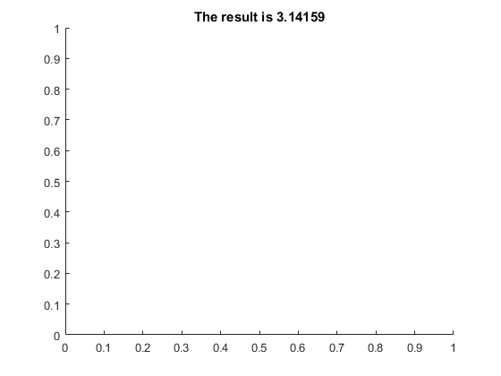

22 Displaying Results
format short
x = [0:.1:pi]';
f = {@sin, @cos, @tan, @cot} ;
y = x ;
for i = 1:length(f)
y = [y f{i}(x)] ;
end
disp(y)
0 0 1.0000 0 Inf
0.1000 0.0998 0.9950 0.1003 9.9666
0.2000 0.1987 0.9801 0.2027 4.9332
0.3000 0.2955 0.9553 0.3093 3.2327
0.4000 0.3894 0.9211 0.4228 2.3652
0.5000 0.4794 0.8776 0.5463 1.8305
0.6000 0.5646 0.8253 0.6841 1.4617
0.7000 0.6442 0.7648 0.8423 1.1872
0.8000 0.7174 0.6967 1.0296 0.9712
0.9000 0.7833 0.6216 1.2602 0.7936
1.0000 0.8415 0.5403 1.5574 0.6421
1.1000 0.8912 0.4536 1.9648 0.5090
1.2000 0.9320 0.3624 2.5722 0.3888
1.3000 0.9636 0.2675 3.6021 0.2776
1.4000 0.9854 0.1700 5.7979 0.1725
1.5000 0.9975 0.0707 14.1014 0.0709
1.6000 0.9996 -0.0292 -34.2325 -0.0292
1.7000 0.9917 -0.1288 -7.6966 -0.1299
1.8000 0.9738 -0.2272 -4.2863 -0.2333
1.9000 0.9463 -0.3233 -2.9271 -0.3416
2.0000 0.9093 -0.4161 -2.1850 -0.4577
2.1000 0.8632 -0.5048 -1.7098 -0.5848
2.2000 0.8085 -0.5885 -1.3738 -0.7279
2.3000 0.7457 -0.6663 -1.1192 -0.8935
2.4000 0.6755 -0.7374 -0.9160 -1.0917
2.5000 0.5985 -0.8011 -0.7470 -1.3386
2.6000 0.5155 -0.8569 -0.6016 -1.6622
2.7000 0.4274 -0.9041 -0.4727 -2.1154
2.8000 0.3350 -0.9422 -0.3555 -2.8127
2.9000 0.2392 -0.9710 -0.2464 -4.0584
3.0000 0.1411 -0.9900 -0.1425 -7.0153
3.1000 0.0416 -0.9991 -0.0416 -24.0288
y = [x sin(x) cos(x) tan(x) cot(x)] ;
fprintf('pi is %12.8f\n', pi)
pi is 3.14159265
A = magic(3)
fprintf('%4.2f %4.2f %4.2f\n', A')
b = (1:3)' ;
fprintf('A\\b is [%g %g %g]''\n', A\b);
A =
8 1 6
3 5 7
4 9 2
8.00 1.00 6.00
3.00 5.00 7.00
4.00 9.00 2.00
A\b is [0.05 0.3 0.05]'
fprintf('x is %d\n', 1:5)
x is 1
x is 2
x is 3
x is 4
x is 5
fprintf('x is %d\n', (1:5)')
x is 1
x is 2
x is 3
x is 4
x is 5
fprintf('row %d is %4.2f %4.2f %4.2f\n', [(1:3)' A]')
row 1 is 8.00 1.00 6.00
row 2 is 3.00 5.00 7.00
row 3 is 4.00 9.00 2.00
x = [0:.1:pi]' ;
f = {@sin, @cos, @tan, @cot} ;
y = x ;
fprintf(' x') ;
for i = 1:length(f)
fprintf(' %s(x)',func2str(f{i}));
y = [y f{i}(x)] ;
end
fprintf('\n') ;
fprintf('%3.2f %9.4f %9.4f %9.4f %9.4f\n',y');
x sin(x) cos(x) tan(x) cot(x)
0.00 0.0000 1.0000 0.0000 Inf
0.10 0.0998 0.9950 0.1003 9.9666
0.20 0.1987 0.9801 0.2027 4.9332
0.30 0.2955 0.9553 0.3093 3.2327
0.40 0.3894 0.9211 0.4228 2.3652
0.50 0.4794 0.8776 0.5463 1.8305
0.60 0.5646 0.8253 0.6841 1.4617
0.70 0.6442 0.7648 0.8423 1.1872
0.80 0.7174 0.6967 1.0296 0.9712
0.90 0.7833 0.6216 1.2602 0.7936
1.00 0.8415 0.5403 1.5574 0.6421
1.10 0.8912 0.4536 1.9648 0.5090
1.20 0.9320 0.3624 2.5722 0.3888
1.30 0.9636 0.2675 3.6021 0.2776
1.40 0.9854 0.1700 5.7979 0.1725
1.50 0.9975 0.0707 14.1014 0.0709
1.60 0.9996 -0.0292 -34.2325 -0.0292
1.70 0.9917 -0.1288 -7.6966 -0.1299
1.80 0.9738 -0.2272 -4.2863 -0.2333
1.90 0.9463 -0.3233 -2.9271 -0.3416
2.00 0.9093 -0.4161 -2.1850 -0.4577
2.10 0.8632 -0.5048 -1.7098 -0.5848
2.20 0.8085 -0.5885 -1.3738 -0.7279
2.30 0.7457 -0.6663 -1.1192 -0.8935
2.40 0.6755 -0.7374 -0.9160 -1.0917
2.50 0.5985 -0.8011 -0.7470 -1.3386
2.60 0.5155 -0.8569 -0.6016 -1.6622
2.70 0.4274 -0.9041 -0.4727 -2.1154
2.80 0.3350 -0.9422 -0.3555 -2.8127
2.90 0.2392 -0.9710 -0.2464 -4.0584
3.00 0.1411 -0.9900 -0.1425 -7.0153
3.10 0.0416 -0.9991 -0.0416 -24.0288
fid = fopen('mytable.txt', 'w') ;
fclose(fid) ;
title(sprintf('The result is %g', pi))

for n = 1:16
s = num2str(n) ;
s = ['%2d digits: %.' s 'g\n'] ;
fprintf(s, n, pi) ;
end
1 digits: 3
2 digits: 3.1
3 digits: 3.14
4 digits: 3.142
5 digits: 3.1416
6 digits: 3.14159
7 digits: 3.141593
8 digits: 3.1415927
9 digits: 3.14159265
10 digits: 3.141592654
11 digits: 3.1415926536
12 digits: 3.14159265359
13 digits: 3.14159265359
14 digits: 3.1415926535898
15 digits: 3.14159265358979
16 digits: 3.141592653589793